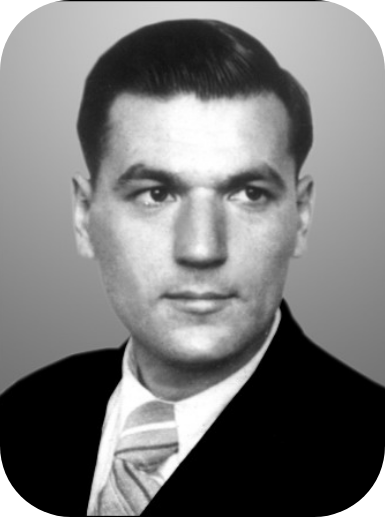
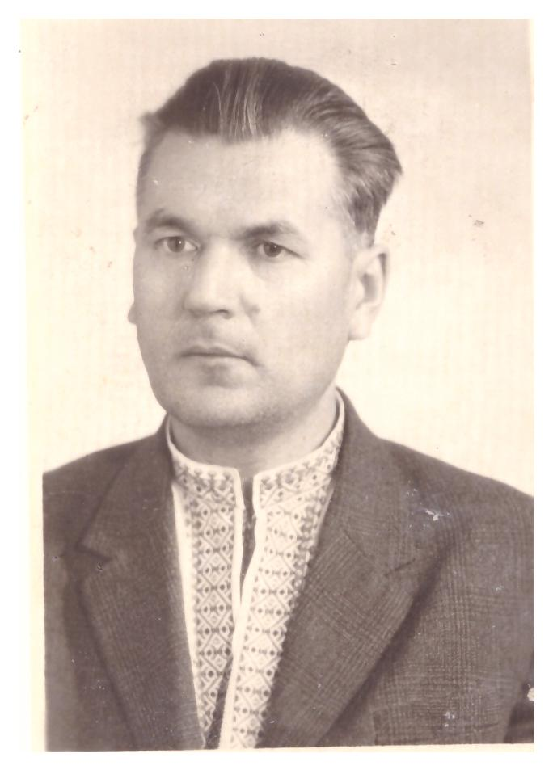
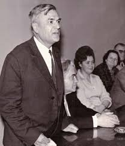
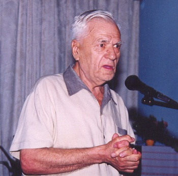

Біографія

Життєвий шлях Дмитра Григоровича Білоуса розпочався 24 квітня 1920 року в селі Курмани на Сумщині в багатодітній сім'ї селян Ганни Давидівни і Григорія Миколайовича Білоусів. Крім Дмитра (був десятою дитиною), у сім’ї були Наталка, Василь, Олекса, Катря, Павло, Маруся, Сашко, Христина, Надія, Микола. «Трудове виховання — на вигоні пастухування», «Справлялися добре з харчами, — не їли лиш хвостиків з груш», «Ходив я в сестринських чоботях з дірками замість підошов», — згадував поет згодом, осмислюючи своє дитинство.
Мати Дмитра — "героїня хатнього космосу". «Maмa запам'яталася мені, малому, не через якусь родинну подію, а саме в найбуденнішому епізоді: присівши на хвилечку на скрині, вона геть-зовсім злягла на правий бік — і заснула. А тоді як схопиться: «Ой, що ж це я?! Стільки діла чекає, а я сплю!» У поета зберігаються квитки, вручені його мамі разом з орденом «Материнська слава» на безкоштовний проїзд залізницею. Один раз скористалася, більше не встигла... Батько Григорій Миколайович — сільський мудрець, книжник, порадник і заступник односельців. Його обрали навіть народним суддею.
У сім’ї шанували слово, любили його теотральні вистави. Коли малий Дмитро, перехворівши висипним тифом, був на грані смерті, видатний педагог запропонував забрати кволого хлопчика в комунарівський гурт. Так майбутній письменник вирушив у люди. А на людей йому просто щастило. У харківській середній школі літературу викладав брат Тичини - Євген Григорович. Дмитро потоваришував із його сином Владиславом і не раз бував у них удома. Саме тоді у Д. Білоуса зародився великий інтерес до мови. Через усе місто їздив він на заняття гуртка художнього слова при театрі робітничої молоді. Потім в університеті вчився разом з Олесем Гончаром, Григорієм Тютюнником. У той же харківський період у літературному об’єднанні він познайомився з Олександром Підсухою і Валентиною Ткаченко. У спілкуванні Дмитро Білоус був надзвичайно тактовний, ненав’язливий і водночас дуже вимогливий до того, про що йдеться. Не любив пліток, нашептів, обминав їх, немов брудні калюжі.
Війна зруйнувала всі сподівання студента-філолога. Вже на початку німецько-радянської війни, у липні 1941 року, він добровольцем записується в армію, закінчивши лише три курси філфаку. У Харкові формується студентський батальйон для оборони Києва. Згодом О. Гончар так згадуватиме про побратимів-студбатівців: «Серед небагатьох, котрі лишилися живими, наших студбатівців – Дмитро Білоус, поет і перекладач, з яким ми взимку 1942 року , виявляється, лежали в одному евакогоспіталі, в Красноярську, в приміщенні школи на березі Єнісею, хоч лише пізніше дізналися, що під спільним дахом були наші госпітальні палати». У перших боях на Київщині у серпні 1941 року Дмитро Білоус був тяжко поранений. 1942 року лікувався в шпиталях Красноярська. Після одужування він 1943 року знову стає до лав армії, бере в руки слово-зброю: починає працювати на радіостанції «Радянська Україна» при Всесоюзному радіокомітеті, що вела передачі для партизанів. У щоденному спілкуванні з Петром Панчем, Олександром Копиленком, Ярославом Галаном формувалась його творча індивідуальність – першопочатково як поета-сатирика. Його першою літературною зброєю стала сатира, що зумовлено було не лише воєнною необхідністю, але і хистом до цього жанру. Неоціненними уроками були тодішні зустрічі з Остапом Вишнею, який із симпатією та прихильністю ставився до Дмитра Білоуса. Згодом, на початку 1950-х, О. Вишня захистив свого молодшого побратима від необґрунтованих нападів критики.
Після визволення Києва, Д. Білоус продовжує і завершує навчання у Київському держуніверситеті (1945 р.) і аспірантуру при кафедрі української літератури (1948 р.). Працює в Республіканському радіокомітеті. Потім – літературний консультант журналу «Вітчизна», від 1947 р. – заст. відповідального секретаря часопису «Дніпро». Закінчивши аспірантуру, стає відповідальним секретарем цього молодіжного літературного видання. Від 1957 р. – завідувач кабінету молодого автора при Спілці письменників України. Своїм учителем його вважали Іван Драч, Дмитро Павличко, Володимир Забаштанський. І незабаром, 1948 року, відбувся літературний дебют Дмитра Білоуса як поета – вийшла у світ збірка гумористичних та сатиричних віршів «Осколочним» (редактор Андрій Малишко). У цьому ж році його було прийнято до Спілки письменників. А 1957 р. вийшла збірка «Добрим людям на здоров’я, ворогам на безголов’я», а згодом й інші: «Веселі обличчя», «Зигзаг», «Колос і кукіль», «Сатиричне і ліричне», «Критичний момент», «Тарасові жарти», «Хто на черзі», «Альфи — не омеги», «Хліб-сіль їж, а правду ріж».

Ще одна дуже яскрава грань таланту Д. Білоуса — перекладацтво. У цій галузі Дмитро Григорович — і майстер слова, і лінгвіст, і теоретик, і практик-організатор, і видавець. Він ставиться до перекладу з якоюсь особливою ніжністю, з величезним пієтетом. Треба бачити натхненне обличчя Білоуса, коли він читає болгарською чи білоруською мовою поезії, а відтак — переклад українською, а потім коментує переливання, перевисання почуттів, думок з однієї мовної стихії в іншу. Як він милується багатством споріднених мов! А почалося з того, що наприкінці п'ятдесятих, коли поету було під сорок, поїхав він у відрядження Спілки письменників на півроку до Болгарії вивчати братню мову. Як тут не згадати його ж слова: Життя тебе жбурнуло на бистрінь — то, мабуть же, чогось від тебе хоче...
Тридцять років працює Д. Білоус у болгаристиці. Багато за цей час зроблено. Згадаймо лише збірки поезій Івана Базова, Георгія Джагарова, Дмитра Методієва, Ангела Тодорова, Ніно Ніколова... Крім того, чимало перекладено прозових і драматичних творів, книжок для дітей, фольклорних видань. А вершина, безперечно, — двотомна антологія болгарської поезії, понад половину творів з якої Д. Білоус переклав особисто. Видання було відзначене в Болгарії золотою медаллю як найкраща з антологій вітчизняної літератури, випущених за кордоном. Уряд Болгарії нагородив поета орденом Кирила і Мефодія І ступеня, а на Україні він удостоєний за цю працю премії імені Максима Рильського. Окрім болгарської, Дмитро Білоус перекладав також з білоруської, російської, польської, литовської, вірменської, азербайджанської мов.
Д. Білоус проводить багаторічну і невтомну роботу по вихованню літературної зміни. Досить сказати, що поет 11 років керував літстудією видавництва «Молодь». Він щедро і по-батьківськи альтруїстично ділиться своїм досвідом, прагне підтримати щонайменший проблиск нової індивідуальності, роздмухати бодай маленьку іскорку поезії. Багатьох він увів у світ красного письменства, підтримав словом, порадою, співчуттям.

В одному з інтерв’ю Дмитро Григорович сказав: «Не хочу здаватися ні кращим, ні гіршим. Хочу бути самим собою. А ще ніколи не боявся чорнової роботи». Лауреат Державної премії України імені Тараса Шевченка, літературних премій імені Лесі Українки та Максима Рильського, автор талановитих книг для дорослих і малечі, перекладач — Білоус завжди залишався надзвичайно скромною і делікатною людиною. Він ніколи не шкодував себе для людей і добрих справ.
Д.Г. Білоус мав невелику родину: дружину Олену Тимофіївну (яку він ласкаво називав Льоля) і прийомного сина Олексу. Разом із письменником Олексндром Бакуменком дружина поета сприяла укладанню книг: Білоус Д. Безцінний скарб: Вірші про українську мову / Вступ. стаття: В.В. Коптілов.-К.: «Укр. енцикл.» ім. М.П. Бажана, 2004.-328 с.; «Неоціненний скарб. Вірші для дітей і дорослих».-К., 2013.-346 с. (ввійшли і опубліковані, і неопубліковані твори); «Тобі, Україно». Вступна саття О.Бакуменко.-К.-2010.-863 с. А книгу «Зодчий слова» (К., 2007.-373 с.) літературознавець О.Д.Бакуменко, як можна вже зрозуміти із назви, присвятив чарівникові українського слова Д.Г.Білоусу. Це були останні дарунки письменника читачам. Відомий літературознавець Віктор Коптілов у передмові наголошує: «Неоціненний скарб» цікавий тим, що книжка становить своєрідний експеримент, за розвитком якого пильно стежить читач. Адже усі три частини – «Абеткові істини», «Ключ до любові» та «Їжакова канцелярія» — багатожанрові, містять як загадки, так і урочисті гімни на честь рідної мови. Улюбленим жанром Дмитра Білоуса є вірш-коментар, створений і розвинутий ним у літературі. Приміром, вірш «До молитви абеткової» є не просто коментарем, а славленням абетки».
 Мудрий митець, енергійна та невтомна людина, він працював, плекав нові творчі задуми… Але золотого осіннього дня 13 жовтня 2005 року Дмитро Григорович відійшов у вічність, залишивши нам свій дорогоцінний спадок і вічний заповіт берегти себе як націю!
Мудрий митець, енергійна та невтомна людина, він працював, плекав нові творчі задуми… Але золотого осіннього дня 13 жовтня 2005 року Дмитро Григорович відійшов у вічність, залишивши нам свій дорогоцінний спадок і вічний заповіт берегти себе як націю!